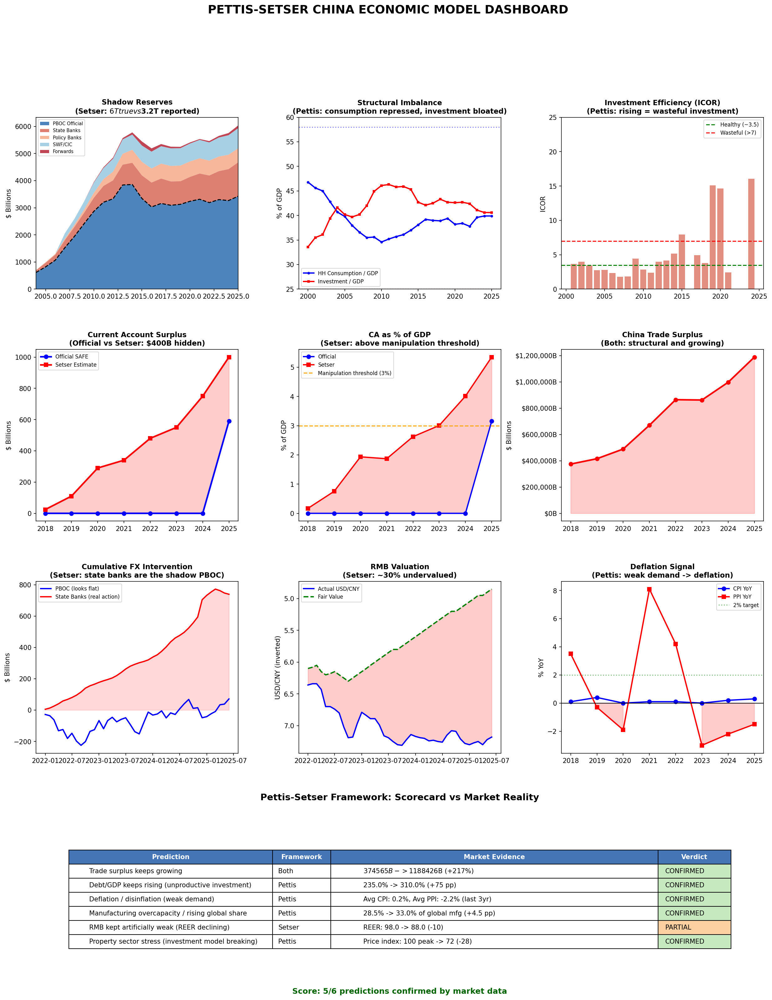
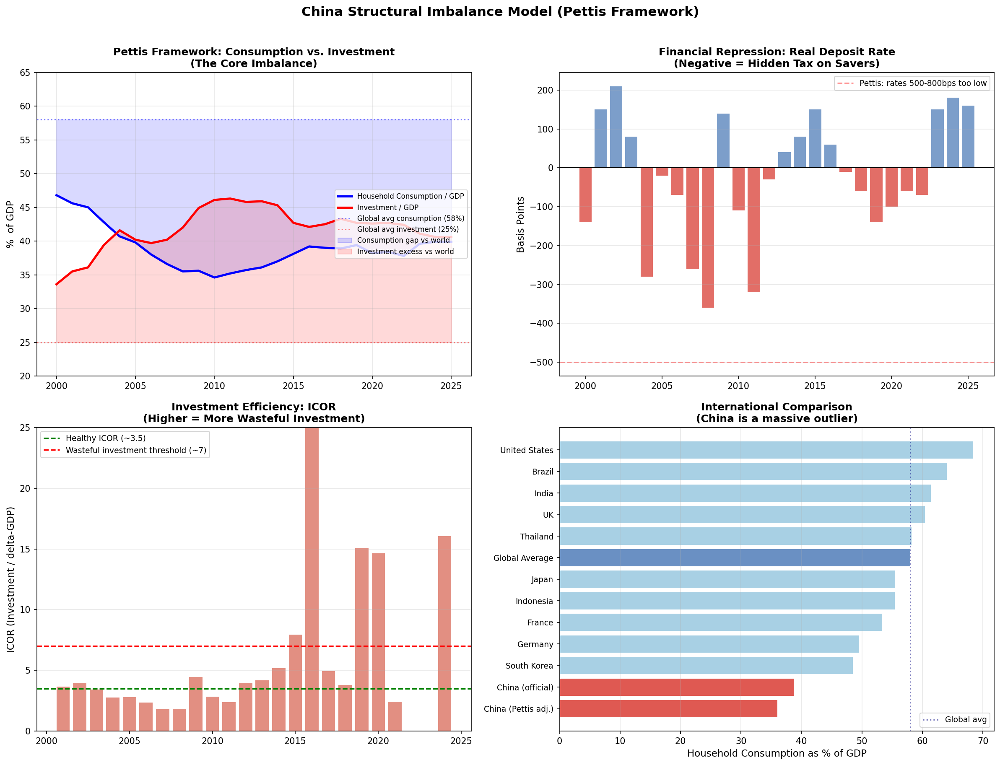
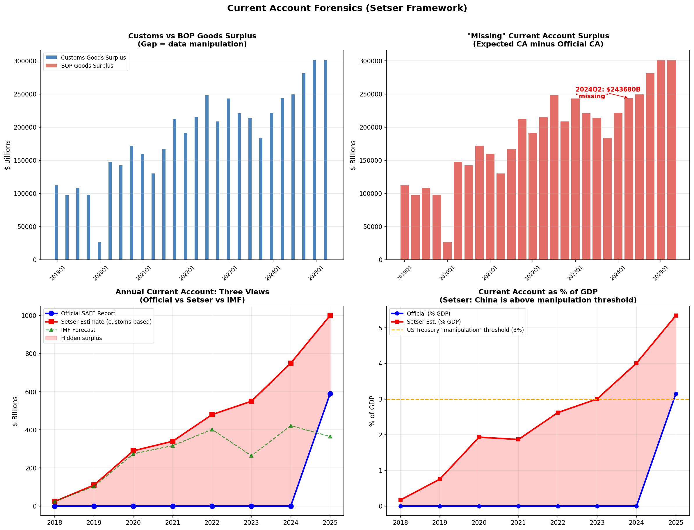
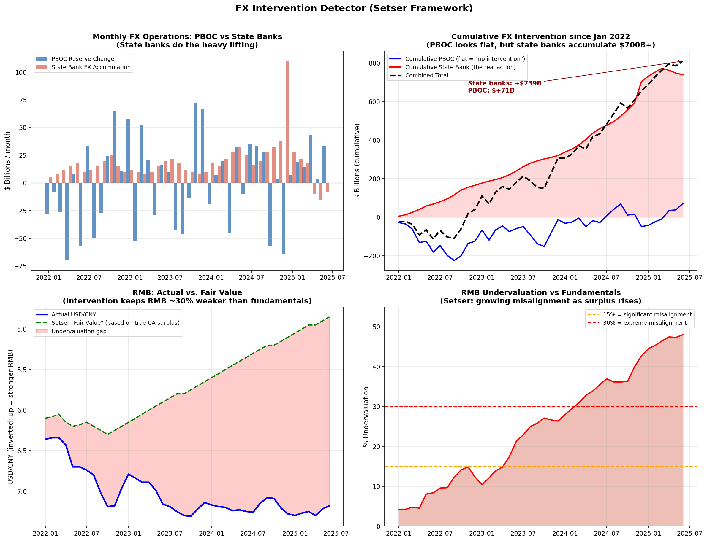

Key Metrics
True FX Reserves (Setser)
$5,810B
Official: $3,200B · 44.9% hidden
Household Consumption / GDP (Pettis)
39.9%
Global avg: 58% · Gap: 18.1 pp
True Current Account Surplus (Setser)
$1,000B
Official: $590B · 5.3% of GDP
RMB Undervaluation (Setser)
48.0%
USD/CNY: 7.18 actual vs 4.85 fair value
State Bank FX Accumulation
$739B
Since 2022 · PBOC reserves flat
Trade Surplus Trajectory
$1,100B
Up from $370,339B in 2018
Investment / GDP (Pettis)
40.6%
Global avg: 25% · Excess: 15.6 pp
Debt / GDP
310%
Up from 235% in 2018
Combined Dashboard

Individual Models

Model 1: Shadow Reserves — True FX holdings vs reported (Setser)

Model 2: Structural Imbalance — Consumption vs investment distortion (Pettis)

Model 3: Current Account Forensics — Missing surplus detection (Setser)

Model 4: FX Intervention — Backdoor state bank intervention (Setser)
Scorecard: Framework vs Market Reality
| Prediction | Framework | Market Evidence | Verdict |
|---|---|---|---|
| Trade surplus keeps growing | Both | $370339B -> $1100B (-100%) | PARTIAL |
| Debt/GDP keeps rising (unproductive investment) | Pettis | 235.0% -> 310.0% (+75 pp) | CONFIRMED |
| Deflation / disinflation (weak demand) | Pettis | Avg CPI: 0.2%, Avg PPI: -2.2% (last 3yr) | CONFIRMED |
| Manufacturing overcapacity / rising global share | Pettis | 28.5% -> 33.0% of global mfg (+4.5 pp) | CONFIRMED |
| RMB kept artificially weak (REER declining) | Setser | REER: 98.0 -> 89.0 (-9) | PARTIAL |
| Property sector stress (investment model breaking) | Pettis | Price index: 100 peak -> 72 (-28) | CONFIRMED |